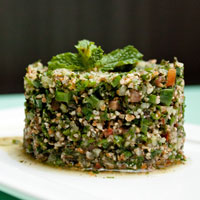

We start our day at the crack of dawn to bake our own muffins, bread, and dinner rolls. Loaves not used that day are donated to the local food shelter.
Not only is our food good, it's also good-looking! Our patrons often stop to admire our fare with a quick Instagram before digging in. We've collected a few of our favorite shots here.
We start our day at the crack of dawn to bake our own muffins, bread, and dinner rolls. Loaves not used that day are donated to the local food shelter.

People come from all over to enjoy our lovingly made burgers. We grind our own locally-sourced organic beef and turkey so you know it's fresh and free from fillers and other nonsense. Go for one of our creative topping combos or stick with the classics.

Our chef works with local fisherman to pick the freshest the sea has to offer for our daily seafood special. Our Roast Cod Caponata with Roasted Potatoes is an old favorite with our regulars.

We work with locally sourced farms for the best raised, non GMO, non hormonal, white chicken. Thinly sliced, brushed with egg wash, and dipped into our famous "shake and bake" beer batter, then fried to tender perfection.

Pair any of our main courses with a side of freshly made french fries, fried in olive oil with a sprinkle of sea salt.

We dice fresh tomatoes, finely chop parsley, mint, onion, bulgur, and season olive oil, lemon juice, salt and pepper to create our famous tabouleh.